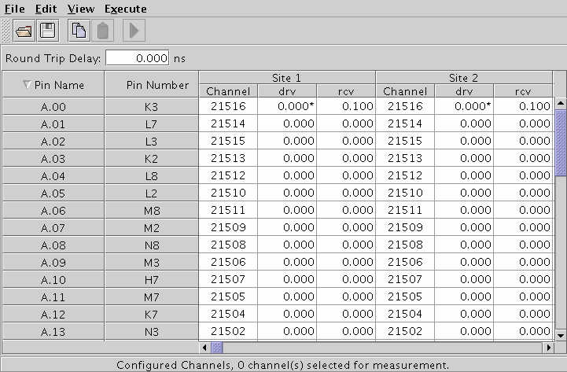

Fixture Delay Tool window
When you open the Fixture Delay Tool, the Fixture Delay Tool window displays the channel numbers and their associated fixture delay values.
When the Fixture Delay Tool is initially started, the default fixture delay data from the ch_attributes/checkdefault file in the current device directory is displayed.

You can display the fixture delay for receive channels by choosing .
You can directly change the fixture delay values of each pin. If the receive column is displayed, you can change the drive value and receive value independently.
Round Trip Delay is the time required for the signal from the I/O board to travel to the DUT pin and back. If round trip delay becomes significant in your measurement, you can enter a value in nanoseconds in Round Trip Delay. The value entered here will be added to all receive edges for all channels that have receive capability (the timing will be updated). The default value in this field is 0.
The menus at the top of the window allow the following procedures.
- Open other fixture delay data files, see Using the File menu
- Edit individual fixture delay values, see Edit menu
- Select the channels for which data shall be displayed, see View menu
- Perform fixture delay measurements, see Using the Execute menu
A description of each menu and its use is included in this section.
Functional changes
- Introduced before SmarTest 6.3.2
- SmarTest 7.0.1: For Pin Scale 9G pins, the drive value is marked with an asterisk if it is different from the receive value.
- SmarTest 7.0.1: For Pin Scale 9G pins, you can change the fixture delay values for drive edges and receive edges simultaneously or respectively.